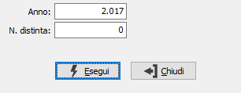

Annullamento contabilizzazione distinta pagamenti
Il programma effettua l'annullamento della contabilizzazione della distinta di pagamento.
La procedura cancella le scritture contabili di generazione pagamenti e anticipi relative alla distinta richiesta.

E' necessario inserire l'anno ed il numero di una distinta pagamenti contabilizzata; sul campo data presentazione è presente uno zoom (F9) per cercare le distinte secondo vari criteri.